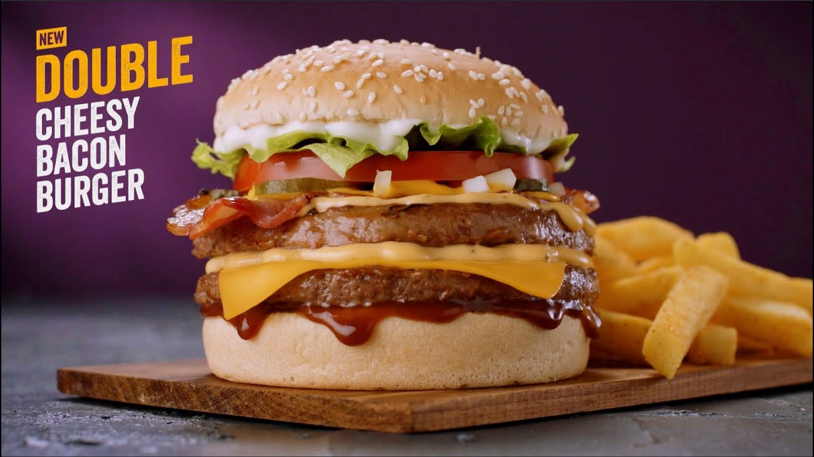
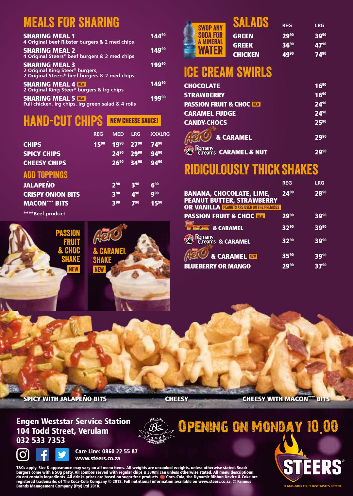

STEERS
WHO ARE WE ?
Steers is a South African quick-service restaurant brand, serving burgers and chips. Other menu items include chicken burgers, ribs as well as ice cream, milkshakes and chicken & salads among other things.
The history of the company revolves around thee Halamadaris family, whose members are still part of the executive team today, with extensive experience in the food and franchising industries.
Steers founder, George Halamandaress, created the original Milky lane ice cream palours, followed in quick successsion by the first South African steakhouse(the Rosebank Golden Spur), the Seven Steers steakhouse in Highlands North and the Black Steer in Yeoville in the early 1960s.He was also one of the first entrepreneurs to bring the franchising concept to South Africa.
After uncle George died in 1984, leadership of the chain passed to his nephews Peter , Theo and their brother Perry , as well as to Uncle George's youngest son, John. The three brothers had been all operating their own franchises and John was operating the manufacturing business, supplying Steers outlets and other retailers.
Together, they re-engeenerd the brand and actively sought franchisees. The early 1980's saw opening of Steers in Sandton City, which attracted interest from would-be franchisees, and this encouraged the team behind Steers to launch their franchise programme.
There seemed tro be no shortage of prospective francisees wanting to buy into their francise model, and more than 15 Steers outlets had opened within two years, with this number growing to 250 stores 10 years later.
By the end of the 1990s, Steers started expanding it's business beyond South Africa, and outlets opened in Swaziland(now Eswatini), Botswana, Zimbabwe, Kennya, Mauritius, Zmbia , Tanzania and Ivory Coast.The name steers evolved over the years too, starting with Golden Spur, the changing to Seven Steer, followed by Branded Steer and Longhorn Steer, before becoming Steers.
Steers Holding listed on the JSE in November 1994, and in 2001 changed its name to Famous Brands limited. This reflected the diversity of the Famous Brand Group portfolio, although Steers remained the icon brand within the group.
OUR ITEMS & MENU:
 